요즘 뜨는 인기 웹소설의 조건
문피아 웹소설 트렌드 분석
개요
- 수집 2026년 10월 9일 / 11월 10일
- 대상 문피아 골드게이지 인기순(최신순) 목록의 전체 작품
- 목표 인기작의 공통 조건과 최근 한 달 상승작의 특징 찾기
- 표본 두 차례 수집에서 모두 확인된 309편
- 10월 362편 / 11월 365편 / 11월 신규 진입 56편 / 10월 이탈 53편
- 변수 순위 / 조회수 / 좋아요 / 선호작 / 회차 수 / 글자 수 / 등록일 / 장르 / 태그 / 소개글 등 31개
- 도구 Python (BeautifulSoup / pandas / scipy / statsmodels / networkx / matplotlib)
데이터 수집
01_crawl_popular_details.py- 인기순 목록 HTML에서 순위와 작품 ID 수집 → 작품별 상세 API(JSON) 호출
- 동시 요청 5개 / 요청 간격 0.3초
02_join_latest_rank.py최신순 목록의 순위를 작품 ID 기준으로 결합03_merge_final.py목록과 상세 정보를 1:1 검증 후 병합 →munpia_final_YYYY_MM_DD.csv저장- 결과: 두 시점 모두 상세 수집 성공률 100% / 작품 ID 중복 0건
데이터 정제
- 자료형 날짜 3개와 수치 9개 변환. 변환 실패 값은 결측 처리
- 결측
- 태그 없는 작품 12편: 두 달 모두 같은 작품이고 API 응답도 정상 → 원래 태그를 달지 않은 작품
- 연재일수 82편 결측 → 등록일로 연재 기간 재계산
- 장르 재분류
- 현대판타지가 작품의 79%에 포함되고 61%는 다른 장르와 섞여 있음
- 현대판타지 단독 / 현대판타지+다른 장르 / 그 밖의 장르로 재분류. 장르값의 '공모전' 표기 삭제
- 제목 키워드 띄어쓰기 제거 후 정규식 사전 12개 그룹으로 분류
# 키워드 그룹별 정규식 사전 (12개 중 일부) TITLE_THEMES = { "해고·퇴사·방출": r"해고|퇴사|은퇴|방출|퇴출|좌천|면직|잘렸|버림|제명|쫓겨", "헌터·각성·탑": r"헌터|각성|탑|던전|스킬|레벨업", "역사·국가": r"삼국지|조선|세종|고려|단종|제국|대한|소비에트|황제|왕국|독립군", # ... 9개 더 }
분석 방법
- 상관 분석 두 값이 함께 움직이는지 확인
- 비율 차이 검정 상위 100위와 나머지의 차이가 우연인지 확인 (분석 과정 2)
- 리프트 두 태그가 우연보다 몇 배 자주 함께 붙는지 (차트 05)
- 보정 평균 작품 수가 적은 장르의 값이 튀지 않게 조정 (차트 01)
- 네트워크 군집 함께 쓰이는 태그끼리 자동으로 묶기 (차트 03)
- 회귀 분석 한 요인이 늘 때 신규 조회수가 얼마나 달라지는지 (차트 07~09)
분석 결과
장르
차트 01장르 조합별 하루 평균 조회수
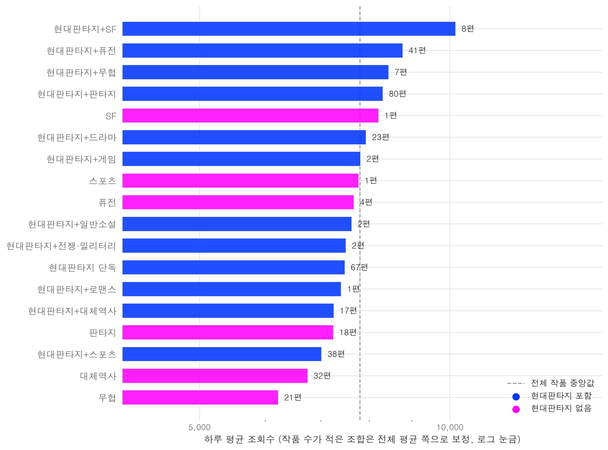
- 누적 기준 1위 현대판타지+SF(8편). 이어서 현대판타지+퓨전 / 현대판타지+무협 / 현대판타지+판타지
- 상위 4개 모두 현대판타지 혼합 조합
- 대체역사(32편)와 무협(21편) 단독은 최하위권
- 누적 성과는 현대판타지에 다른 장르를 섞은 조합이 강함
차트 02장르 조합별 작품 수와 최근 신규 조회수
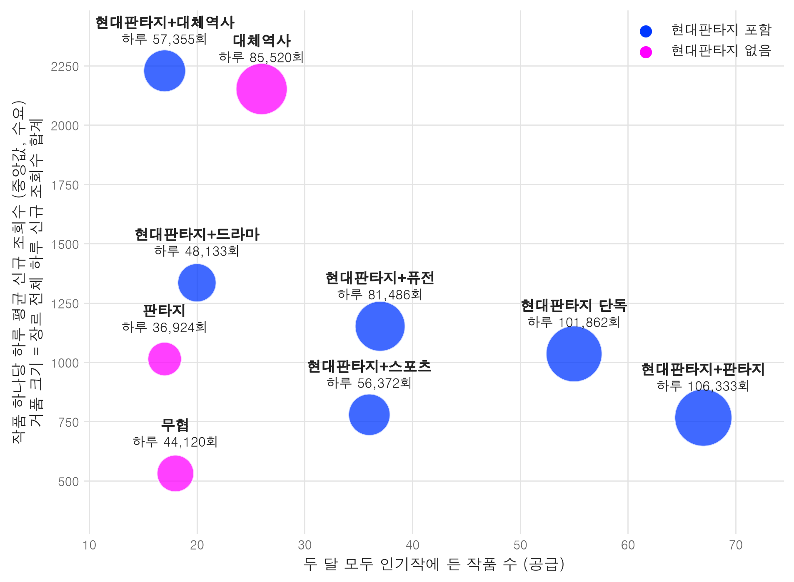
- 작품당 하루 신규 조회수 1위 현대판타지+대체역사 2,228회(17편) / 2위 대체역사 2,152회(26편)
- 둘 다 전체 중앙값 1,035회의 2배 이상
- 작품 수 1위 현대판타지+판타지(67편)는 766회
- 공급은 적고 수요는 큰 장르는 대체역사. 누적(01)과 최근(02) 순위가 뒤집힘
태그
차트 03어떤 태그끼리 함께 쓰일까
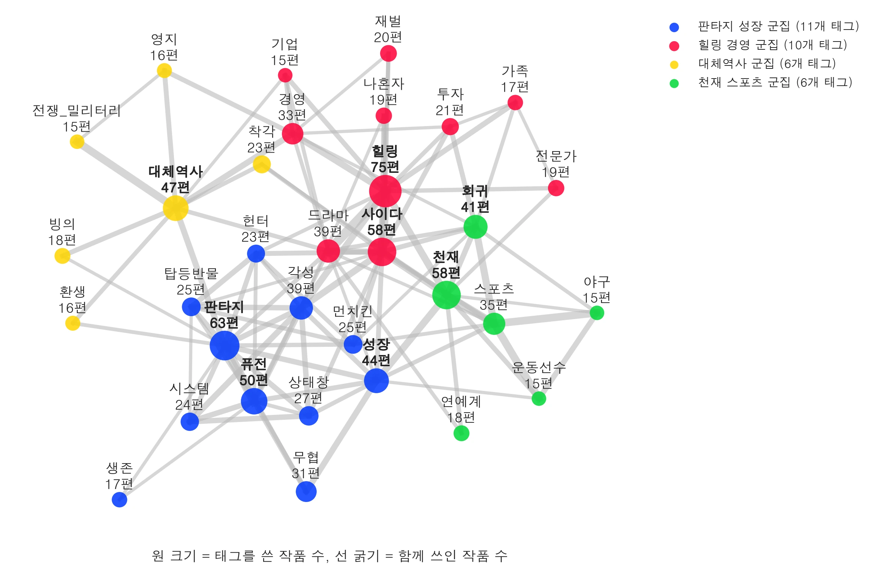
- 판타지 성장 판타지 / 퓨전 / 성장 / 각성 / 헌터 / 상태창 등 11개
- 힐링 경영 힐링 / 사이다 / 드라마 / 경영 / 투자 / 재벌 등 10개
- 대체역사 대체역사 / 착각 / 빙의 / 영지 / 환생 / 전쟁_밀리터리 6개
- 천재 스포츠 천재 / 회귀 / 스포츠 / 연예계 / 야구 / 운동선수 6개
- 현대판타지 태그는 365편 중 256편(70%)에 붙어 모든 태그와 이어짐 → 네트워크에서 제외
- Louvain 군집은 시드를 바꿔도 같은 4개 군집. 판타지 성장과 대체역사 군집은 다른 군집 방법에서도 같은 구성
- 태그는 네 가지 공식으로 나뉘고 판타지 성장과 대체역사 군집이 가장 뚜렷함
차트 04적게 쓰였는데도 조회수가 많이 늘어난 태그
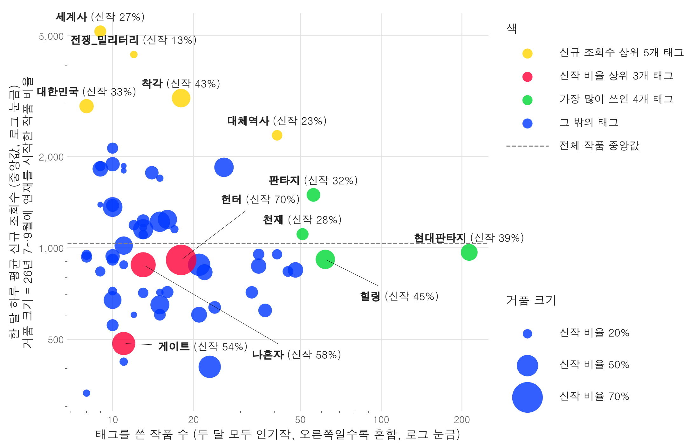
- 신규 조회수 중앙값 상위: 세계사 5,165회(9편) / 전쟁_밀리터리 4,335회(12편) / 착각 3,114회 / 대한민국 2,929회 / 대체역사 2,348회
- 많이 쓰인 태그는 중앙값 근처: 현대판타지 966회(213편) / 힐링 916회 / 천재 1,109회
- 신작 비율 1위 헌터 70%. 신규 조회수는 912회로 중앙값 아래
- 성과는 흔한 태그가 아니라 적게 쓰인 역사 계열 태그에서 나옴
차트 05함께 자주 붙는 태그 조합
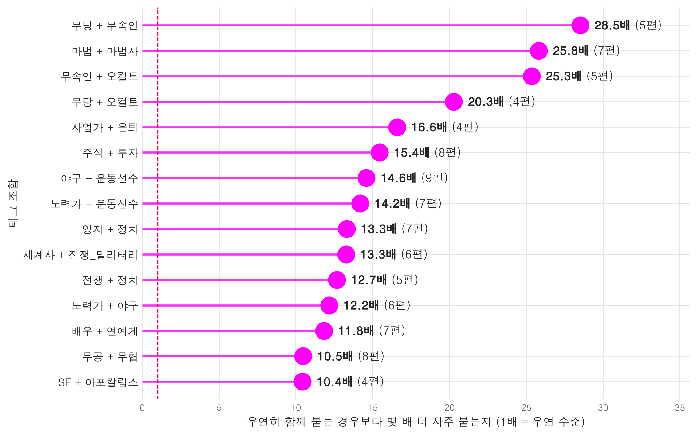
- 1위 무당+무속인 28.5배(5편) / 마법+마법사 25.8배 / 무속인+오컬트 25.3배
- 역사 계열 조합: 영지+정치 13.3배 / 세계사+전쟁_밀리터리 13.3배 / 전쟁+정치 12.7배
- 역사 계열 태그는 국가 경영 세트로 함께 붙음
제목
차트 06연재 시작 시기별로 제목에 자주 쓰인 키워드
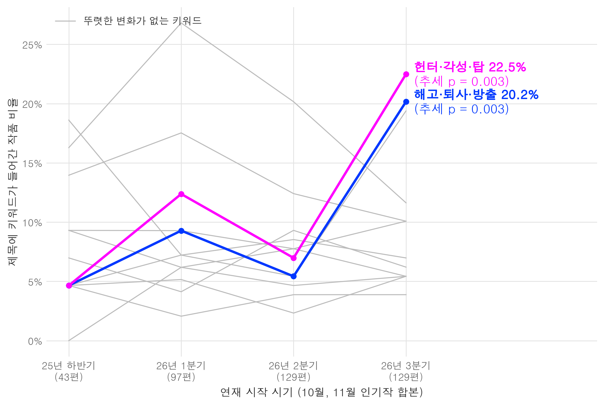
- 26년 3분기 시작작 제목: 헌터 그룹 22.5% / 해고 그룹 20.2%. 25년 하반기에는 둘 다 4.7%
- 12개 그룹 중 증가 추세가 확인된 것은 이 둘뿐 (p = 0.003)
- 최신 유행은 밀려난 주인공이 반등하는 서사
연재 방식
차트 07한 달 동안 회차를 많이 올린 작품일수록 조회수가 더 늘었을까
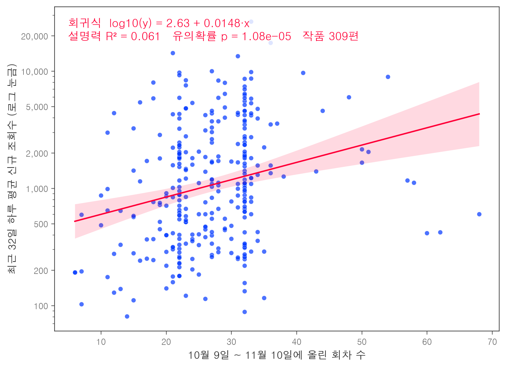
- 회차 10회 추가 → 신규 조회수 약 1.4배 (p < 0.001)
- 설명력 6% (R² 0.061). 작품 대부분이 32회(매일 연재) 부근에 몰림
- 매일 연재는 차별점이 아닌 기본 조건
차트 08회당 글자 수가 많을수록 조회수가 더 늘었을까
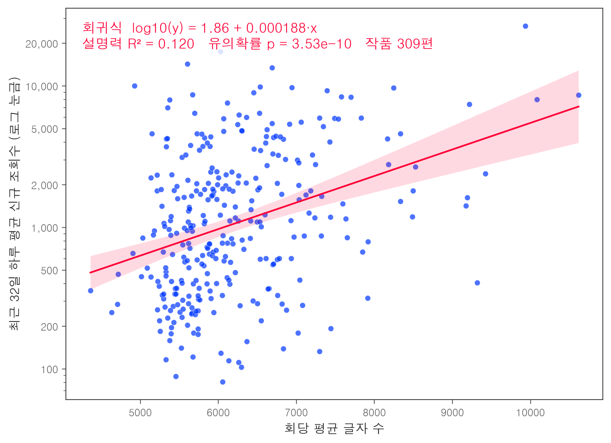
- 회당 1,000자 추가 → 신규 조회수 약 1.5배 (p < 0.001)
- 설명력 12% (R² 0.120)로 업로드 횟수의 2배. 회당 글자 수 중앙값 약 5,900자
- 연재 횟수보다 회당 분량이 신규 유입과 더 강하게 연결됨
상승 요인
차트 09최근 한 달 신규 조회수에 영향을 준 요인
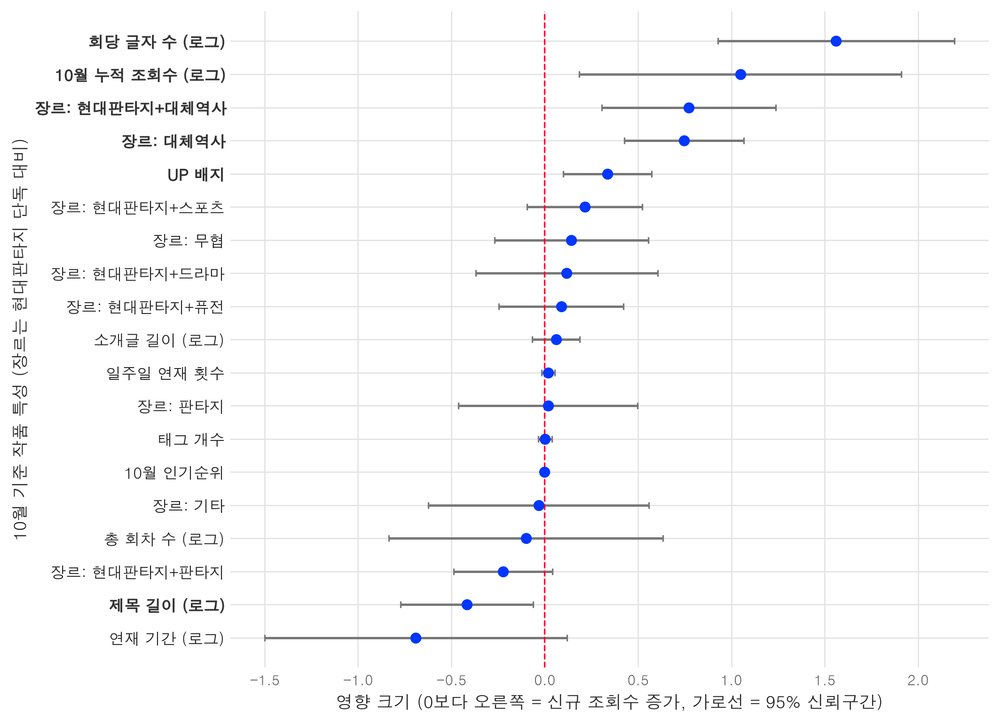
- 10월 기준 변수 19개로 한 달 신규 조회수의 62% 설명 (R² 0.615 / 309편)
- 유의한 요인 (p < 0.05): 회당 글자 수 / 10월 누적 조회수 / 대체역사 계열 / UP 배지는 플러스. 제목 길이는 마이너스
- 다른 조건이 같을 때
- 대체역사 계열: 현대판타지 단독보다 약 2.1배 (장르 효과는 현대판타지 단독과 비교한 값)
- UP 배지: 약 1.4배
- 회당 글자 수 10% 증가: 약 16% 증가
- 제목 길이 2배: 약 25% 감소
- 업로드 횟수 / 태그 개수 / 10월 순위는 유의하지 않음
- 대체역사 + 넉넉한 회당 분량 + 짧은 제목이 상승 조건
차트 10최근 한 달 상승세가 가장 강한 작품
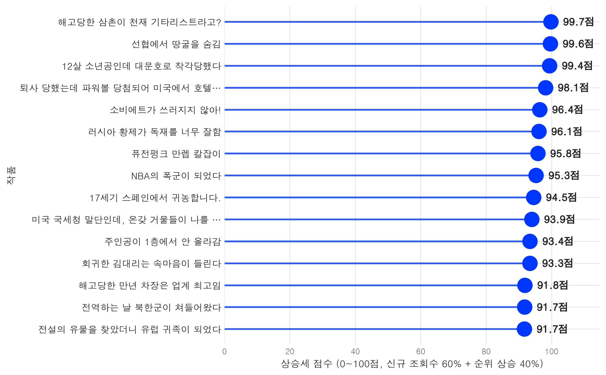
- 1위 해고당한 삼촌이 천재 기타리스트라고? 99.7점 / 2위 선협에서 땅굴을 숨김 99.6점 / 3위 12살 소년공인데 대문호로 착각당했다 99.4점
- 상위 15편 중 해고와 퇴사 제목 3편 / 역사와 국가 배경 4편
- 06의 신작 유행과 02의 대체역사 강세가 실제 상승작에서도 확인됨
분석 과정
1. 태그 네트워크: 3개 군집에서 4개 군집으로
- 상황태그끼리 어떻게 묶이는지 동시 출현 네트워크로 확인
- 문제현대판타지 태그가 256개로 거의 모든 태그와 이어져 가운데가 뭉침. 3개 군집이 나왔지만 Modularity Q가 0.25로 낮음 (0.3 이상이면 뚜렷한 편)
- 해결현대판타지 태그를 빼고 군집 방법 2가지(그리디 / Louvain)를 비교
- 결과Louvain은 시드를 5번 바꿔도 같은 4개 군집, Q는 0.37로 상승 → 최종 결과로 확정
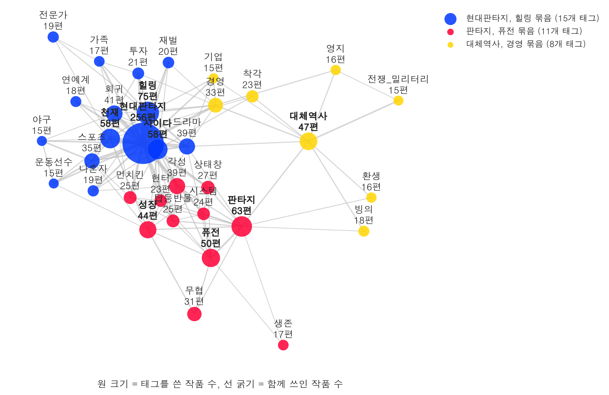
2. 막대에서 롤리팝으로
- 상황태그 조합(차트 05)과 상승세 상위 작품(차트 10)을 처음에 가로 막대로 그림
- 문제15개 막대가 화면을 꽉 채워 값보다 막대 면적이 먼저 보이고 길이가 비슷한 항목끼리 구분이 어려움
- 해결가는 선 끝에 원을 단 롤리팝으로 바꾸고 수치는 원 오른쪽으로 옮겨 원에 가리지 않게 함
- 결과끝 값(배수, 점수)이 바로 읽히고 항목 이름도 더 잘 보임
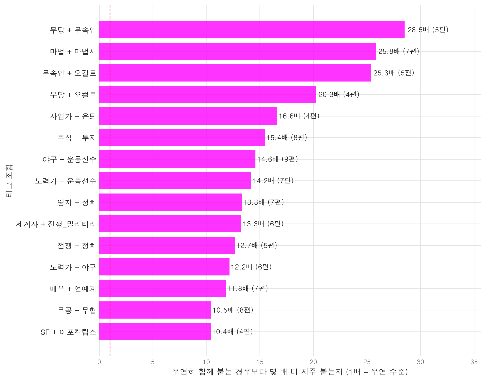
종합 인사이트
- 지금 독자가 몰리는 장르는 대체역사
- 작품 수는 적은데 작품당 신규 조회수는 중앙값의 2배 이상
- 다른 조건을 통제해도 현대판타지 단독의 약 2.1배
- 흔한 태그는 평균에 수렴
- 성과 차이는 세계사 / 전쟁_밀리터리 / 정치처럼 적게 쓰인 역사 계열 태그 세트에서 발생
- 연재 횟수보다 회당 분량
- 매일 연재는 기본. 회당 글자 수가 신규 조회수의 가장 큰 플러스 요인
- 밀려난 주인공의 반등 서사가 최신 유행
- 해고 그룹 키워드는 26년 3분기 시작작 제목의 20%로 급증
- 상승세 상위 15편 중 3편이 해고와 퇴사 제목 → 유행이 실제 상승으로 이어짐